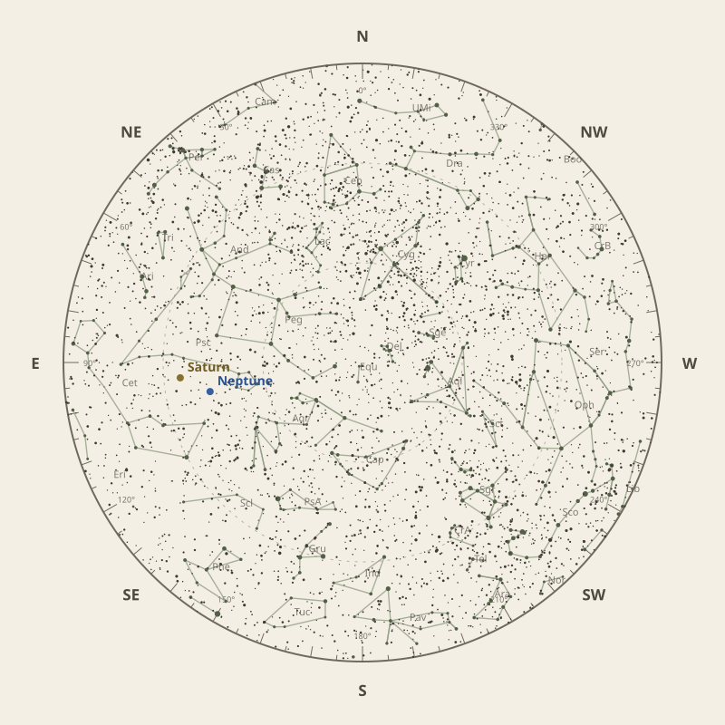

← Annual almanac


North is at the top; east is at the left. Solar System objects shown are above the horizon at 10 pm.
Monthly field almanac
September 2026
Neptune reaches opposition on 26 Sep 2026 and is highest around 12:30 am.
- New Moon
- 11 Sep Darkest skies
- Full Moon
- 27 Sep Brightest skies
- Best dark window
- 15 Sep 11h 05m
Current conditions
Checking the sky near Malabar Coast, India…
Sky chart: 15 Sep 2026, 10 pm
Malabar Coast, India local time.
Show static monthly chart

Night planner
Choose a date to see astronomical darkness, Moon interference, Galactic Centre visibility, and planet altitudes and times.
Best low-Moon dark periods this month
- 6:49 pm–5:54 am11h 05m · 18% Moon
- 6:50 pm–5:54 am11h 05m · 11% Moon
- 6:50 pm–5:54 am11h 04m · 6% Moon


Galactic Centre sessions
- 6:56 pm–11:16 pm4h 20m · core to 50°
- 6:56 pm–11:16 pm4h 20m · core to 50°
- 6:55 pm–11:15 pm4h 20m · core to 50°
Events
- HIP 19182 lunar occultation12:24 am; Moon at 14° altitude for the first listed contact.
- HIP 19341 lunar occultation12:40 am to 1:11 am; Moon at 17° altitude for the first listed contact.
- Uranus stationary pointApparent motion changes direction.
September highlights
- Planets
Neptune
Best monthly date at 79° altitude.
- Milky Way
Milky Way core window
4h 20m with 50° altitude.
- Occultations
Venus lunar occultation
5:20 pm to 6:45 pm; Moon at 42° altitude for the first listed contact.
- Planetary events
Neptune opposition
Visible for most of the night.


Moon phases
88%
19%
18%
78%
96%
For faint deep-sky objects, observe when the Moon is below the horizon or weakly illuminated. For lunar relief, observe near the terminator; full Moon is best suited to ray systems and albedo features.
Download Moon phase CSV →

Planet visibility
Evening
- Venus1 Sep · 7:00 pm27° · Good
- Mercury30 Sep · 7:00 pm7° · Poor
 Venus
Venus Mercury
MercuryOvernight
- Saturn3 Sep · 2:30 am82° · Excellent
- Neptune1 Sep · 2:00 am79° · Excellent
 Saturn
Saturn Neptune
NeptunePredawn
- Uranus24 Sep · 4:30 am80° · Excellent
- Mars30 Sep · 6:00 am58° · Excellent
- Jupiter30 Sep · 6:00 am41° · Good
 Uranus
Uranus Mars
Mars Jupiter
Jupiter